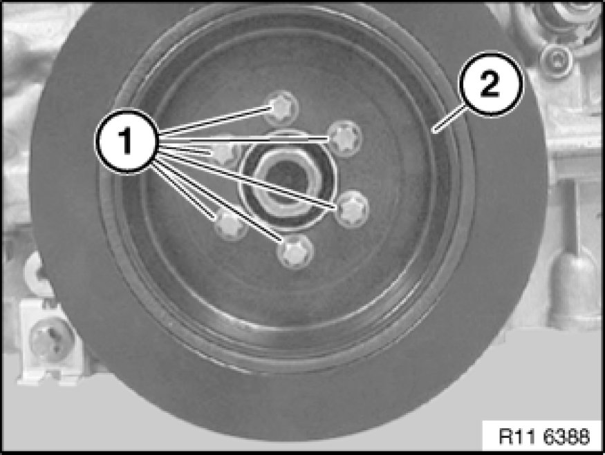

Harmonic Balancer - Crankshaft Pulley: Service and Repair
11 23 010 - Removing and installing/replacing vibration damper (N52K)

Necessary preliminary tasks:
- Remove underbody protection Removing and Installing/Replacing Front Underbody Protection.
- Remove drive belt

Release screws (1).
Tightening torque 11 23 1AZ 11 23 Vibration Damper.
Remove vibration damper (2).

Assemble engine.